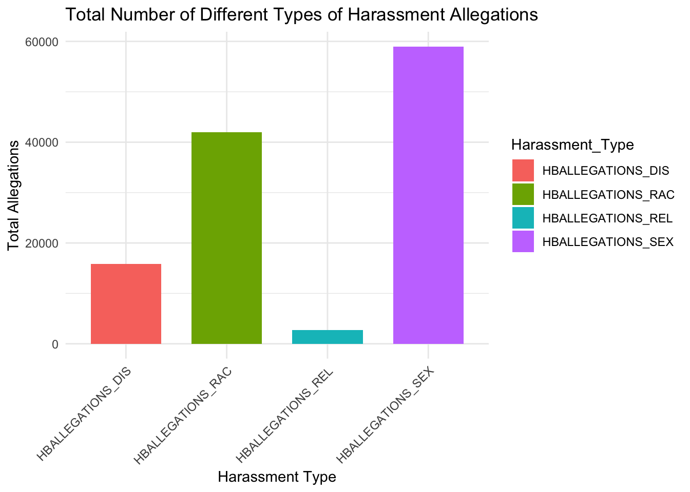
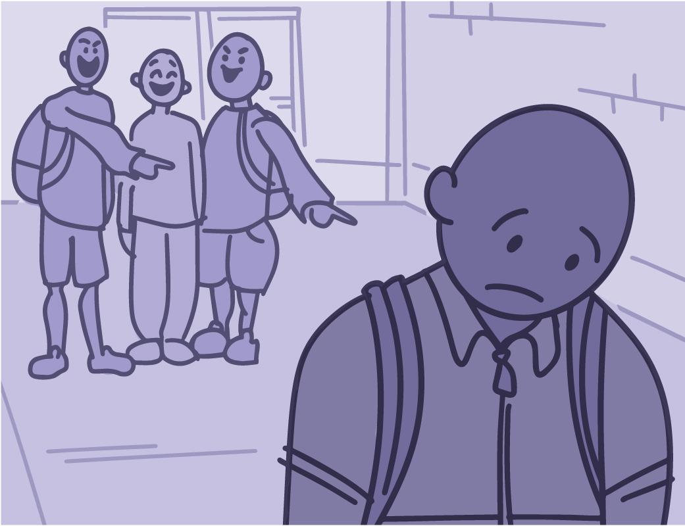
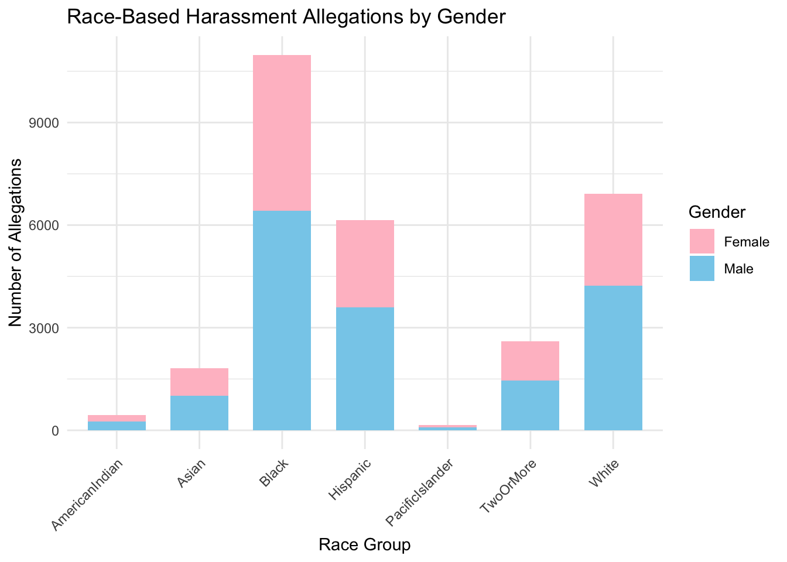
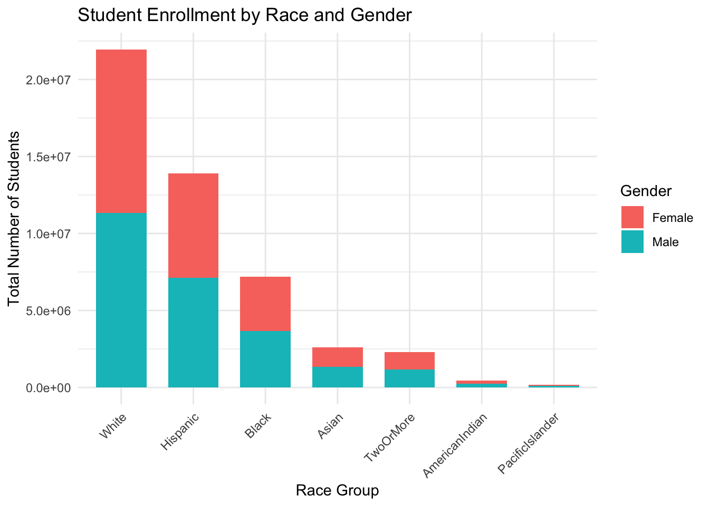

Data
We describe the sources of our data and the cleaning process.

Source
The data is publicly available on the CRDC website, allowing access to the original source.
Describe where/how to find data
All of our three raw datasets are coming from the Civil Rights Data Collection (CRDC). It includes public schools and school districts across the United States, collected by the U.S. Department of Education’s Office for Civil Rights (OCR).
It is used to monitor educational access and equity, ensuring compliance with federal civil rights laws. The datasets originate from the U.S. Department of Education’s Civil Rights Data Collection (CRDC) from the year 2021-2022, accessible at civilrightsdata.ed.gov.
Data Source
Data Set 1: Harassment and Bullying
Description:
This dataset primarily focuses on harassment and bullying incidents reported in educational institutions, capturing various forms of misconduct and disciplinary actions. It includes key variables such as state, district, school names, student demographics and so on.It gathers key civil rights metrics to assess access to and obstacles in educational opportunities from early childhood through grade 12. The Office for Civil Rights (OCR) utilizes this data from public school districts to investigate discrimination complaints, evaluate compliance with federal civil rights laws, conduct proactive reviews, and offer policy guidance and technical support to schools and districts.
| Variable | Description | Data Type |
|---|---|---|
| HBALLEGATIONS_SEX | Number of reported harassment/bullying allegations based on sex or gender | int64 |
| HBALLEGATIONS_RAC | Number of reported harassment/bullying allegations based on race | int64 |
| HBALLEGATIONS_DIS | Number of reported harassment/bullying allegations based on disability | int64 |
| HBALLEGATIONS_REL | Number of reported harassment/bullying allegations based on religion | int64 |
| HBREPORTED_RAC_HI_M | Number of Hispanic Male Students | int64 |
| HBREPORTED_RAC_HI_F | Number of Hispanic Female Students | int64 |
| HBREPORTED_RAC_AM_M | Number of American Indian/Alaska Native Male Students | int64 |
| HBREPORTED_RAC_AM_F | Number of American Indian/Alaska Native Female Students | int64 |
| HBREPORTED_RAC_AS_M | Number of Asian Male Students | int64 |
| HBREPORTED_RAC_AS_F | Number of Asian Female Students | int64 |
| HBREPORTED_RAC_HP_M | Number of Native Hawaiian/Pacific Islander Male Students | int64 |
| HBREPORTED_RAC_HP_F | Number of Native Hawaiian/Pacific Islander Female Students | int64 |
| HBREPORTED_RAC_BL_M | Number of Black Male Students | int64 |
| HBREPORTED_RAC_BL_F | Number of Black Female Students | int64 |
| HBREPORTED_RAC_WH_M | Number of White Male Students | int64 |
| HBREPORTED_RAC_WH_F | Number of White Female Students | int64 |
| HBREPORTED_RAC_TR_M | Number of Two or More Races Male Students | int64 |
| HBREPORTED_RAC_TR_F | Number of Two or More Races Female Students | int64 |
Distribution of key variables
Harassment Type
Harassment grouped by race

Data Set 2: School Support
Description The school support dataset contains information on the number of full-time equivalent (FTE) counselors, psychologists, and security guards at individual schools. After removing negative and missing values, we found that most schools have very few support staff, with distributions heavily skewed toward zero. While the majority of schools report no psychologists or guards, a small number of schools report larger support teams. The presence of a few schools with unusually high staff numbers indicates variation likely related to school size or reporting differences.
| Variable | Description | Data Type |
|---|---|---|
| FTECOUNSELORS | Number of FTE school counselors | Decimal |
| FTESERVICES_PSY | Number of FTE psychologists | Decimal |
| FTESECURITY_GUA | Number of FTE security guards | Decimal |
Findings about key variables
counselors psychologists security_guards
Min. : 0.00 Min. : 0.0000 Min. : 0.0000
1st Qu.: 0.20 1st Qu.: 0.0000 1st Qu.: 0.0000
Median : 1.00 Median : 0.0000 Median : 0.0000
Mean : 1.35 Mean : 0.4033 Mean : 0.3739
3rd Qu.: 2.00 3rd Qu.: 0.6000 3rd Qu.: 0.0000
Max. :280.00 Max. :175.0000 Max. :100.0000
NA's :99 NA's :3 NA's :2468 # A tibble: 3 × 8
variable count missing mean median sd min max
<chr> <int> <int> <dbl> <dbl> <dbl> <dbl> <dbl>
1 counselors 98010 99 1.35 1 2.1 0 280
2 psychologists 98010 3 0.4 0 1.21 0 175
3 security_guards 98010 2468 0.37 0 1.42 0 100Counselors are more consistently present across schools.
Psychologists and especially security guards are much less common, with higher proportions of zeros and missing entries.
The high standard deviations relative to means for all three suggest substantial variability across school sizes or resource allocations.Data Set 3: School Enrollment
Reason to use this dataset: The Enrollment dataset contains detailed counts of student populations across multiple racial and ethnic groups at the school level.It breaks down enrollment into male and female students across 7 racial categories: Hispanic, American Indian/Alaska Native, Asian, Native Hawaiian/Pacific Islander, Black, White, and Two or More Races.This data is crucial for accurately normalizing harassment report counts by providing the total population against which allegations are measured, enabling fair comparison across institutions of varying sizes and demographics. If we only compare raw counts of harassment reports, larger schools will naturally have more reports just because they have more students.By dividing number of harassment reports by total enrollment, we calculate harassment allegations per 100 students, which normalizes across schools of different sizes.
| Variable | Description |
|---|---|
| ENR_HI_M | Number of Hispanic Male Students |
| ENR_HI_F | Number of Hispanic Female Students |
| ENR_AM_M | Number of American Indian/Alaska Native Male Students |
| ENR_AM_F | Number of American Indian/Alaska Native Female Students |
| ENR_AS_M | Number of Asian Male Students |
| ENR_AS_F | Number of Asian Female Students |
| ENR_HP_M | Number of Native Hawaiian/Pacific Islander Male Students |
| ENR_HP_F | Number of Native Hawaiian/Pacific Islander Female Students |
| ENR_BL_M | Number of Black Male Students |
| ENR_BL_F | Number of Black Female Students |
| ENR_WH_M | Number of White Male Students |
| ENR_WH_F | Number of White Female Students |
| ENR_TR_M | Number of Two or More Races Male Students |
| ENR_TR_F | Number of Two or More Races Female Students |
Distribution of key variables

# A tibble: 14 × 2
Variable MissingRate
<chr> <dbl>
1 SCH_ENR_HI_M 1.92
2 SCH_ENR_HI_F 1.92
3 SCH_ENR_AM_M 1.92
4 SCH_ENR_AM_F 1.92
5 SCH_ENR_AS_M 1.92
6 SCH_ENR_AS_F 1.92
7 SCH_ENR_HP_M 1.92
8 SCH_ENR_HP_F 1.92
9 SCH_ENR_BL_M 1.91
10 SCH_ENR_BL_F 1.92
11 SCH_ENR_WH_M 1.92
12 SCH_ENR_WH_F 1.93
13 SCH_ENR_TR_M 1.92
14 SCH_ENR_TR_F 1.92# A tibble: 7 × 2
Race Total_Enrollment
<chr> <dbl>
1 White 21947054
2 Hispanic 13914099
3 Black 7197685
4 Asian 2611056
5 TwoOrMore 2284917
6 AmericanIndian 456405
7 PacificIslander 185273Merge and Clean Data Process
This project involved merging and cleaning multiple datasets related to school enrollment, harassment reports, and school support services. In the original dataset, several variables contained reserved codes represented by negative values. These codes are not actual data values but rather placeholders for missing, suppressed, or logic-dependent responses. The specific reserve codes and their meanings are:
| Reserve Code Value | Definition |
|---|---|
| -3 | Skip Logic or Processing Failure |
| -4 | Missing Optional Data |
| -5 | Action Plan/Quick Plans |
| -6 | Force Certified |
| -9 | Not Applicable/Skipped |
| -12 | Suppressed for Privacy Protections |
| -13 | Missing DIND Skip Logic |
To ensure accurate analysis, these values were converted to NA, as they do not represent valid quantitative information. Including them would lead to misleading statistics and incorrect interpretations in visualizations and summaries.
The overall script includes:
- Reading raw datasets from the dataset/ directory
- Replacing reserved codes (e.g. -3, -4, -6, etc.) with NA
- Removing invalid or fully-missing rows
- Renaming variables for clarity (e.g., removing SCH_ prefix)
- Merging harassment, enrollment, and support data into a single cleaned dataset - Saving the output as .rds and .csv files